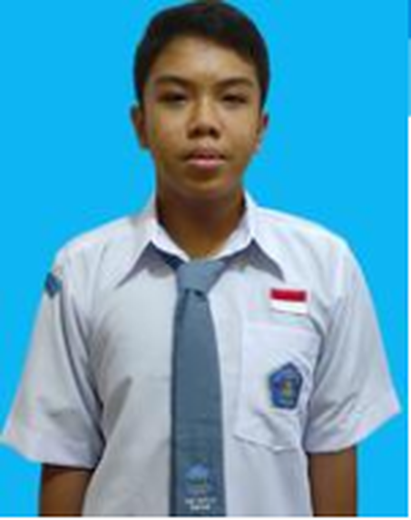
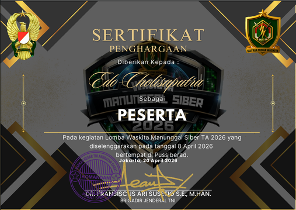
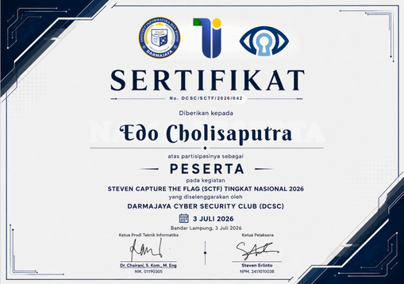
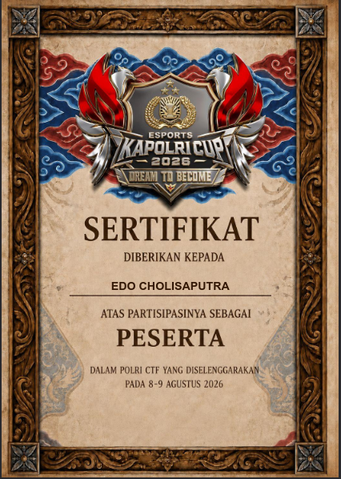

Python
Belajar pemrograman dari konsep-konsep dasar.
SISWA SMK / KELAS XI
Halo, saya Edo. Saya siswa Teknik Komputer dan Jaringan di SMK Yapalis Krian. Saat ini saya mempelajari administrasi jaringan dan Python dasar, sambil mengenal keamanan siber.

Di sekolah, saya belajar dasar keamanan siber dan praktik konfigurasi jaringan. Saya juga sedang membangun dasar pemrograman Python.
Belakangan ini saya tertarik pada forensik digital dan cara membuat agen AI yang aman. Saya ingin memahami bukan hanya cara teknologi dibuat, tetapi juga bagaimana menggunakannya dengan bertanggung jawab.
Aku masih di tahap belajar, jadi daftar ini menunjukkan dasar dan minat—bukan klaim sudah ahli.
Belajar pemrograman dari konsep-konsep dasar.
Latihan konfigurasi dan pengelolaan jaringan.
Mengenal dasar keamanan digital lewat pembelajaran sekolah.
Topik yang ingin saya dalami berikutnya.
Beberapa hal yang pernah saya pelajari dan ikuti selama di sekolah.
Berlatih mengelola dan mengonfigurasi jaringan menggunakan MikroTik serta simulasi Cisco Packet Tracer.
Mempelajari topik keamanan siber melalui proyek pembelajaran dan kegiatan di sekolah.
Pernah mengikuti lomba Waskita Manunggal Siber TA 2026 yang diselenggarakan PUSSIBERAD (Pusat Siber Angkatan Darat).
TUJUAN BELAJAR · DEVFEST 2026
Di DevFest, saya ingin memahami cara menguji respons agen, menjaga data, dan membuatnya tetap aman saat digunakan lebih luas.
Tiga bukti partisipasi dari kegiatan dan lomba keamanan siber yang pernah saya ikuti.

PUSSIBERAD · Peserta · 8 April 2026

Darmajaya Cyber Security Club (DCSC) · Peserta · 3 Juli 2026

Peserta · 8–9 Agustus 2026
06TERHUBUNG
Untuk ngobrol tentang kegiatan belajar atau teknologi, kirimkan pesan lewat email.